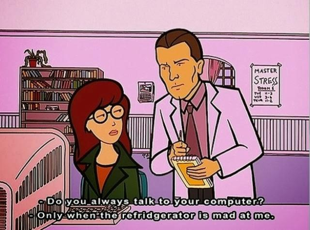
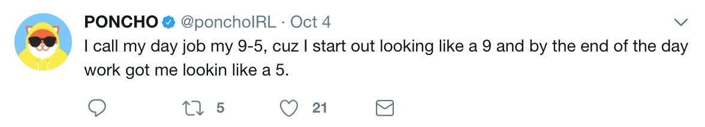
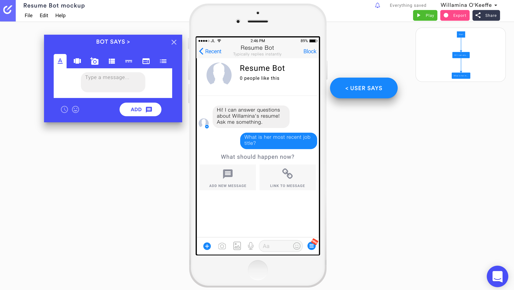
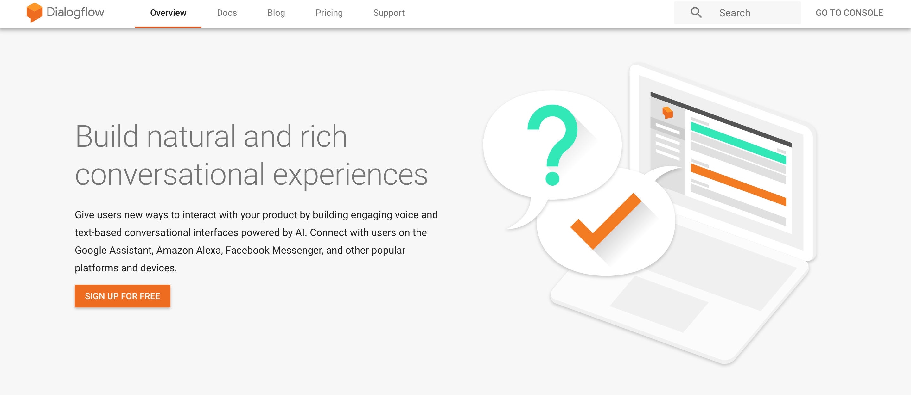
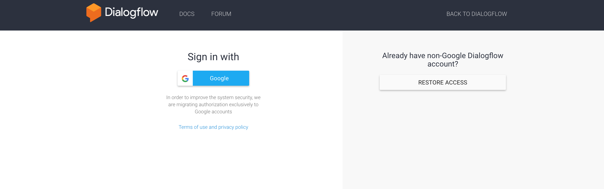
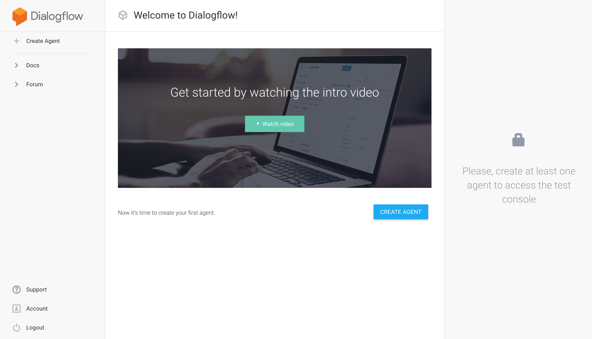
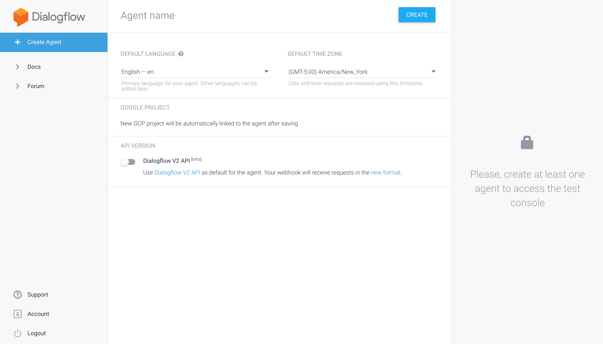
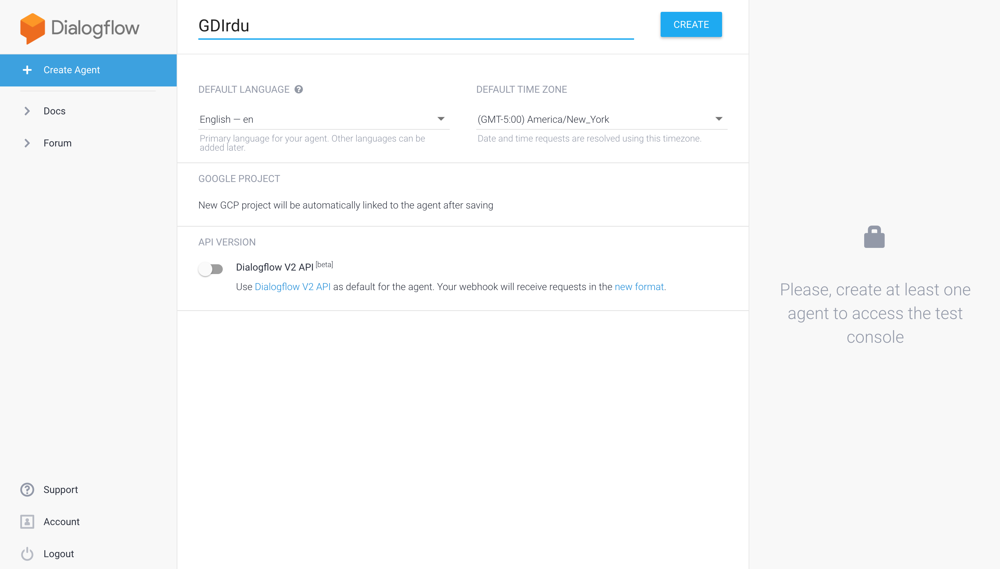
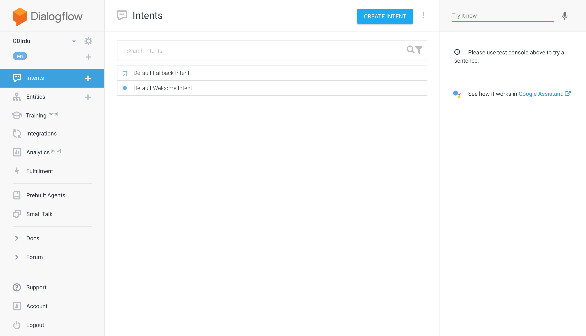

Intro to Conversational Interfaces
Class 1
Welcome!

My name is Willamina O'Keeffe.
Please join us on
slack!
Welcome!
Tell us about yourself.
- Who are you?
- What do you hope to get out of the class?
- Something awesome that happened this week?
Goals:
By the end of the class you will:
- Know the basics of conversational interface design
- Experience designing and building chatbots
- Understand challenges of designing for voice
- Have lots of resources to continue learning!
What are Conversational Interfaces?
Like GUIs, conversational interfaces are a way for users to interact with a product or service.
What are Conversational Interfaces?
"When it comes to bots, software meets humans on our playing field; they adhere to the way humans communicate and try to adjust to our way of thinking."
-Amir Shevat in 'Designing Bots'
Example Conversational Interfaces
Agentive vs Assistive
"Virtual Agent" is a popular term for converstional interfaces like Ask Jenn; however, there is a difference between agentive technology and conversational assistants
Agentive Technology
Helps the user by performing tasks on their behalf
Example: Roomba

Photo credit: Celeste Lindell! cc
Assistive Technology
Helps the user complete a task
Examples:
- Booking a flight or hotel (like Ask Jenn)
- Placing an order (like Gwynn)
This is the type of technology we will focus on
Artificial Intelligence
- Machines can perform tasks that require intelligence like visual recognition, decision making, etc.
- Intelligence can be general or narrow
- Some conversational interfaces use AI; however, most at this time do not
- Siraj Ravel has a helpful video series on deep learning if you want to know more
Natural Language Processing/Understanding
- Machines parse human speech to understand intentions
- Model gets trained on phrases and then makes accurate predictions when encountering new phrases
- Tools available for building that make this tech available without having to code
When Good Bots Go Bad
- Important to consider how bots become biased
- Training the bot and interactions it has reinforces what it is learning
- Bots don't know what is morally and ethically acceptable unless you teach them
- Example: Microsoft's Tay
Designing a Conversation
"When designing conversations, we go back to the ancient art that has been at the core of our society for ages: talking to each other."
-Amir Shevat in 'Designing Bots'
Designing a Conversation
Use of CUIs depends on your needs
Some questions to ask yourself:
- Where are you trying to reach your audience?
- What are you trying to acheive/what is your service?
- What will the bot add to the user experience?
Designing a Convesation
Using a chatbot or other CUI has benefits:
- Reduce the need to download another app
- Reach people on platforms where they already are (ex. Facebook Messenger)
- People already know how to have a conversation!
Designing a Convesation
Remember, choosing to add a CUI because it is the new hot thing is not a good reason.
What kind of bot?
We're going to focus on task led vs topic led and personal vs team
Task Led
- Designed to assist the user complete a specific task, like ordering a pizza
- Use course correction to help the user stay on track to complete their task
- May require the bot to collect specific information from the user
Topic Led
- Purpose is to let the user converse
- Does not have to be for entertainment only, can also provide information like FAQs
Personal
- Used by an individual as a personal assistant
Team
- Used by a group to faciliate group processes or activities
Picking a Platform
"Picking the right platform is crucial to the success of your bot. A bot in the wrong habitat will shrivel and die."
-Amir Shevat in 'Designing Bots'
Where is the best 'home' for your bot?
- Depends on what you want to accomplish/platforms that support your needs
- Personal or consumer bots may do better:
- On a website
- Facebook Messenger or other messaging apps
- Team or business bots may do better:
- Slack
- Skype
Picking a Tool
Lots of tools to build bots are currently available
- Some can only be integrated with certain platforms
- Know what the tool can support (ex. rich interactions, HTML, etc)
- Cost
- Level of support
- We'll be using Dialogflow to build bots
Designing the Conversation
Photo credit: Ron Mader! cc
Onboarding
How will people know what your bot can do?
Onboarding
- Set expectations at the beginning of the conversation
- Don't start with an open ended question
Ex. "Hi! I can take your coffee order."
Ex. "Hi! How can I help you today?
Mapping Flows
What are the possible interactions someone can have with your bot?
Photo credit: Aram Bartholl! cc
Happy Flow
The perfect conversation.
No deviation from the script.
Sketch Out the Flows
Think through possible interactions and create a map of how they fit together.
Some Conversation Considerations
- How will your bot get the user back on track?
- What if the user forgets what the bot can do?
- How long will chit chat go on?
- When to call in a human?
- How will your bot handle abuse?
Let's Sketch It!
In small groups come up with an idea for a bot and think through the conversation flows. Map them out.
Photo credit: Jeremy Brooks! cc
Questions?
Class 2
Designing the Conversation:
Part 2
Intents
What are users trying to accomplish?
Intents
The bot processes the user input and decides which intent (category) that most closely fits what was said then sends back the appropriate response.
You decide what needs to be a new intent and what is a variation on a current intent, then tell the bot what it should 'listen' for.
Scripting Answers
Decide how your bot will respond to each intent and craft a unique answer for each one
- Include variations in responses to keep it interesting
- Use small talk to make the experience more magical
- Opportunity to shape your bot's personality
Default Answers
"When you talk to a human being, there is never an unrecoverable error state."
-Abi Jones Design Lead at Google
Default Answers
- Triggered when the bot doesn't know what to do with the input received
- Important to have variations here as well
- Bot can ask the user to rephrase to increase chances of triggering an intent
Personality
People will anthropomorphise your bot, so spending time deciding on personality is critical
Personality
- Who is your bot at a dinner party?
- What are you trying to convey about your brand, product, or service?
- Will you use an avatar?
Avatars
A visual representation of your bot or voice UI
- Some cultures prefer them, others don't
- Alternatives may be the brand logo, initial, or color
- Can be especially helpful when emotion is involved (ex. healthcare)
- Can be a distraction for straight forward tasks (ex. scheduling an appointment)
- Always avoid the Uncanny Valley
Poncho: Personality and Avatar
Rich Interactions
Interactions a user can have that are not strictly text:
- Buttons
- Links
- Images
- Persistent menus
- Emojis
Benefits of Rich Interactions
- Provide structure to the conversation
- Cut down on time to achieve a goal
- Users can still enter text
Context
- Context is like the memory of the bot
- A more complex concept
- Sometimes use 'entities' or 'slots' to retain information
Confirmations
- Acknowleding input or verifying understanding
- May be implict or explicit
- Implicit: provides confirmation without asking for apporval
- Explicit: requires the user to provide confirmation directly
- Can be a bit annoying so determine what the consequences of the bot getting it wrong are
Let's Try It!
In your groups from earlier pick one path in your flow:
- Choose a personality
- Decide on the intents
- Script answers including a default
- Try adding rich interactions
- Be ready to demonstrate your conversation!
Prototyping
Prototyping
- Important to see how answers look and feel
- Experience rich interactions
- Opportunity for testing with real humans
- Try different tools and methods to see what works best for you
- We'll be using Botsociety today
Let's Prototype It!
Individually, use Botsociety to make a prototype of the path you scripted answers for in your groups.Testing
- Show users what the conversation looks like and get feedback
- Allow users to interact with an early version
- Wizard of Oz method
Questions?
Class 3
Building the Bot!
Photo credit: Mitch Altman! cc
'Simple' Bot Ideas
- Local food recommendations
- Resume/CV
- Movie/book selector
- Pet facts
Getting Started with Dialogflow
Getting Started with Dialogflow
Getting Started with Dialogflow
Getting Started with Dialogflow
Getting Started with Dialogflow
Getting Started with Dialogflow
Getting Started with Dialogflow
Let's Build It!
Add some new intents to your bot. (Be sure to include lots of variations on how a user could invoke each.)
Training
For your bot to get better at predicting which intent to invoke, it needs to be trained.
Basically, your bot needs to have conversations with lots of different kinds of people and then be told if its responses were right or wrong.
Let's Train It!
Trade with your neighbor and converse with each other's bots.
Let's Train It!
Go into Dialogflow and tell your bots how they did.
Launching the Bot
Dialogflow has options for connecting to many different platforms under the Integrations tab. Pick the one that is best for your bot and launch it out into the world! (if you want)
Remember to check on your bot frequently to see how it's doing and if it needs more training/intents!
Questions?
Class 4
Voice Interface
Everything Still Applies
Everything that we've talked about so far carries over to Voice User Interfaces (VUIs).
Early Voice Systems
Who has called a customer service number and talked to the routing system?
Unique Challenges for Voice
Cathy Pearl has wonderful guidelines in her book 'Desiging Voice User Interfaces'
- Use when:
- Speed is desired
- Hands-free would be helpful
- Don't use when:
- Privacy is needed
- Product/service is intended for use in public
- Audience is uncomfortable speaking to a computer
Uh, is it my turn?
How will your user know if they can speak?
- Text makes it easy to see that the system is ready for more input
- Consider adding a visual indicator such as a light or button to hold down
- Cathy Pearl recommends putting the instructions first and the question second
Test How Answers Sound
- Similar to prototyping for text only bots
- Important to understand how responses will feel to users
- Read the answers aloud
Help The Bot Say It Right
In case of emergency, dial 911.
Help The Bot Say It Right
When scripting answers, write them in a way the system will read it as a human would:
- ...dial 9.1.1.
- ... dial nine one one.
When testing responses be on the listen out for things that don't sound right and thing of ways you can script them so the system says them correctly. Amazon has an awesome Voice Design Guide.
Timeouts
How long will the system listen for?
- Until the user has stopped speaking?
- After a certain amount of time?
Response Length
Short.
Wake Words
You want the device to listen...but not to everything.
Wake words let the device know you are about to make a request.
Barge-in
Will users be able to interrupt the VUI at anytime?
Multimedia
Is the device strictly voice or is there a screen that can be utilized (ex. Alexa sends cards to the app)?
What information is best presented on the screen and not spoken aloud?
Let's Practice It!
Look at some of the intents you crafted for your chatbot. With a partner read the responses aloud and see what feels awkward.
Where to Learn More!
- Desiging Bots by Amir Shevat
- Designing Voice User Interfaces by Kathy Pearl
- Designing Agentive Technology by Christopher Noessel
- Superintelligence: Paths, Dangers, Strategies by Nick Bostrom
- Chatbots Magazine
- Siraj Ravel
- Voice Design Guide guide by Amazon
- Voice Design 101 webinar by Amazon
Questions?
Bibliography
These resources were invaluable to my getting started with bots. Their guidance combined with my own experiences shaped the curriculum for this course.
- Desiging Bots by Amir Shevat
- Designing Voice User Interfaces by Kathy Pearl